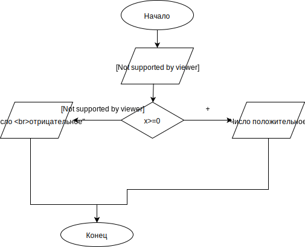
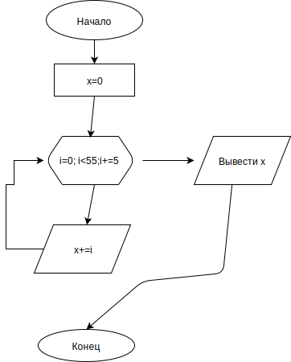

Нарисуйте блок-схему алгоритма, который проверяет значение входного параметра x, и если это
значение больше или равно 0, то возвращает в качестве результата строку "Число положительное", в
противном случае - строку "Число отрицательное"

Задание 2
Нарисуте блок-схему алгоритма суммирования 10 чисел, кратных 5 ( начиная с 0 )

Задание 3
for (i=0;i< hw1.length;i++){
if (hw1[i]>50){
console.log(hw1[i])
}
}